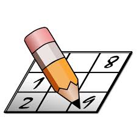

 SudokuSincero
Tu juego matemático de confianza
El objetivo es rellenar una cuadrícula de celdas dividida en subcuadrículas con los numeros dados partiendo de algunos números ya dispuestos en algunas de las celdas. No se debe repetir ningún número en una misma fila, columna o subcuadrícula.
Tamaño del sudoku
4
9
00:00:00
Empezar